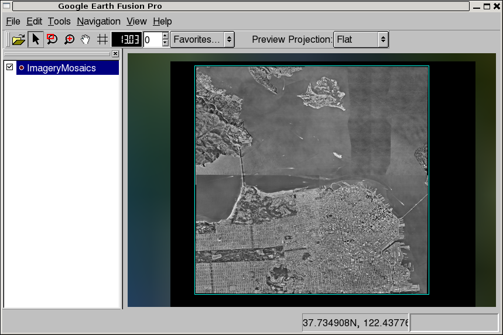

Google Earth Enterprise Documentation Home | Fusion tutorial
Creating Imagery Mosaics
The simplest way to import source data is to create one resource from each data file. In certain cases, though, you might obtain multiple source files that comprise a single image. In that case, you can combine the source files into a single resource, called a mosaic. This lesson guides you through the process of creating an imagery mosaic.
Note: All of the steps in this lesson apply to terrain data as well.
Create an Imagery Resource
To create a mosaic, the source images must meet the following requirements:
- Source images must be in the same projection and use the same coordinate system
- Source images must have the same resolution
- Source images must have geographic proximity to each other
- Ideally, the individual source images are perfectly abutting (no overlap, no gaps)
To define an imagery mosaic:
- Select Asset Manager from the Tools menu. The Asset Manager appears.
- Click on the toolbar. The Imagery Resource Editor appears.

- Set the acquisition date to today’s date in year-month-day format by clicking each section of the date and enter the values.
- Select USGS Imagery from the Provider drop-down list.
- Set the Mask Type (under Mask Options) to No Mask.
- Click Add. The Open Source dialog appears.
- Navigate to the
/opt/google/share/tutorials/fusion/Imagery/SF_grayscale/SFnorthfolder. - Select all four TIFF files (only the four files with the
.tifextension), and click Open.
The selected files appear on the Source File(s) list.
Notice that the Mosaic Options area is enabled when you import more than one imagery file. (Refer to the Reference Guide for detailed explanations of these settings.)
- Under Mosaic Options, for Tile Fill, select Black. Now the Fill Tolerance option is enabled.
- For Fill Tolerance, select 1.
- Select File > Save.
- Navigate to the
/ASSET_ROOT/Resources/Imageryfolder you created in Setting Up the Tutorial. - Enter the name ImageryMosaic for the resource, and click Save.
The name of the resource appears on the right when you select the
/ASSET_ROOT/Resources/Imageryfolder in the asset navigation tree. - Right-click ImageryMosaic, and select Build from the context menu. Google Earth Enterprise Fusion builds the resource.
Note: Building this resource could take several minutes, since it contains four images.
- When the status of the resource changes to Succeeded in the Asset Manager, drag it to the Preview List pane.
- Check the box next to ImageryMosaic in the Preview List pane, and then right-click it and select Zoom to Layer from the context menu.
The grayscale image of San Francisco appears in the Preview pane, surrounded by a bounding box. This is the single mosaic resource created from four separate source files.

Notice the black border and uneven edges of the mosaic. These are called fill pixels. The fill pixels fill the frame around the imagery where its borders are uneven.
If you want to add more imagery around this image and have all of the imagery blend together seamlessly, you need to mask the fill pixels. Masking blocks the pixels that you do not want users to see. The auto mask feature in Google Earth Enterprise Fusion does a very good job of creating masks for most situations. The Google Earth Enterprise Fusion Reference Guide provides instructions for doing so.
In some cases, however, you might want to use a custom mask that you create outside of Google Earth Enterprise Fusion so you have more control over the pixels that are blocked and the pixels that are allowed to show through. However, since Google Earth Enterprise Fusion allows you to use custom masks with resources that include a single source file only, you cannot apply a custom mask to a resource that includes more than one source file.
There is a way to resolve this problem. You can create a virtual mosaic and apply your custom mask to it. A virtual mosaic is a single source file created from multiple source files. The following exercises walk you through the process of creating a virtual mosaic and applying a custom mask to it.
Create a Virtual Mosaic
If you have multiple source files that you want to combine into a single resource to which you want to apply a custom mask, you can create a virtual mosaic using command line tools and then apply the custom mask within the GUI.
To create a virtual mosaic:
-
At the command prompt, change to the folder that contains the imagery source files by entering:
cd /opt/google/share/tutorials/fusion/Imagery/SF_grayscale/SFnorth - Change the permissions to
read/writefor the directory and files that you are using to create the virtual mosaic:chmod 777 /path/mydirectorychmod 777 /opt/google/share/tutorials/fusion/Imagery/SF_grayscale/SFnorth/* -
Create a virtual raster file by entering (all on one line):
gevirtualraster --fill 0,0,0 -o path/all_files.khvr *.tifwhere path is the path to the folder where you want to save the resulting
.khvrfile.The
gevirtualrastercommand specifies the fill value to be used for the mosaic (0,0,0= black), the name of the file to be generated (all_files.khvr), and includes all of the.tiffiles in the specified folder as input. -
Change to the folder where you stored the all_files.khvr file (the value of path in step 2) by entering:
cd path - Enter the following command to be sure the file was created successfully:
ls a*The file
all_files.khvrshould be listed. - Change the permissions for the newly created all_files.khvr file:
sudo chmod 777 all_files.khvr - Preview the new virtual mosaic:
- In the Google Earth Enterprise Fusion GUI, click
 .
.
The Open dialog appears.
- Navigate to the
pathfolder. - Select all_files.khvr, and click OK.
Two entries appear in the Preview List pane: all_files:0 and all_files:1. (If Imagery Mosaic is still listed, you can leave the box next to it checked.)
When you check the box next to all_files:0, a bounding box indicates the position of the entire virtual mosaic. When you check the box next to all_files:1, four bounding boxes indicate the position of each of the individual source files.
Note: Because you have not yet built this resource, only the bounding boxes appear, not the actual imagery.
- In the Google Earth Enterprise Fusion GUI, click
- You can check and uncheck the boxes to see the different views. When you finish, right-click any layer in the Preview List pane, and select Remove All Layers from the context menu. A message prompts you to confirm that you want to remove all layers from the Preview panes.
- Click OK. All of the layers disappear from the Preview panes.
- Back at the command prompt, enter the following command:
cp /opt/google/share/tutorials/fusion/Imagery/SF_grayscale/all_files-mask.tif
pathThis command copies the mask file provided with the tutorial data into the same folder as
all_files.khvryou created in step 3. -
Change to the
pathfolder, if necessary, and enter the following command:ls a*Both files,
all_files.khvrandall_files-mask.tif, should be listed.
The mask for your input must be located in the same folder as the source file, and the file name must match the name of the source file with -mask appended. In this case, the mask file is named all_files-mask.tif. When you select Have Mask in the Imagery Resource Editor in the next exercise, Google Earth Enterprise Fusion automatically applies the mask file by reference to the source file.
Apply a Custom Mask to the Virtual Mosaic
Now that you have a virtual mosaic and a custom mask for it, you can import the virtual mosaic into a resource and apply the mask. This exercise guides you through that process.
To apply a custom mask to the virtual mosaic:
- Select Asset Manager from the Tools menu. The Asset Manager appears.
- Click on the toolbar. The Imagery Resource Editor appears.
- Set the acquisition date to today’s date in year-month-day format by clicking each section of the date and enter the values.
- Select USGS Imagery from the Provider drop-down list.
- Set the Mask Type (under Mask Options) to Have Mask.
- Click Add. The Open Source dialog appears.
- Navigate to the
pathfolder. - Select
all_files.khvr, and click Open. The selected file appears on the Source File(s) list. - Select File > Save.
- Navigate to the
/ASSET_ROOT/Resources/Imageryfolder you created in Setting Up the Tutorial. - Enter the name VirtualMosaic for the resource, and click Save. The name of the resource appears on the right when you select the
/ASSET_ROOT/Resources/Imageryfolder in the asset navigation tree. - Right-click VirtualMosaic, and select Build from the context menu. Google Earth Enterprise Fusion builds the resource.
Note: Building this resource could take several minutes.
- When the status of the resource changes to Succeeded in the Asset Manager, drag it to the Preview List pane.
- Check the box next to VirtualMosaic in the Preview List pane, and then right-click it and select Zoom to Layer from the context menu.
The grayscale image of San Francisco appears in the Preview pane, surrounded by a bounding box. This is the mosaic created from four separate tiles.
Notice that the black border and uneven edges of the mosaic are gone. The mask has done its job.